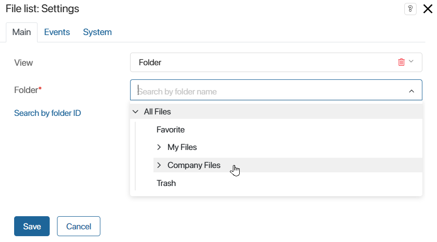
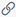
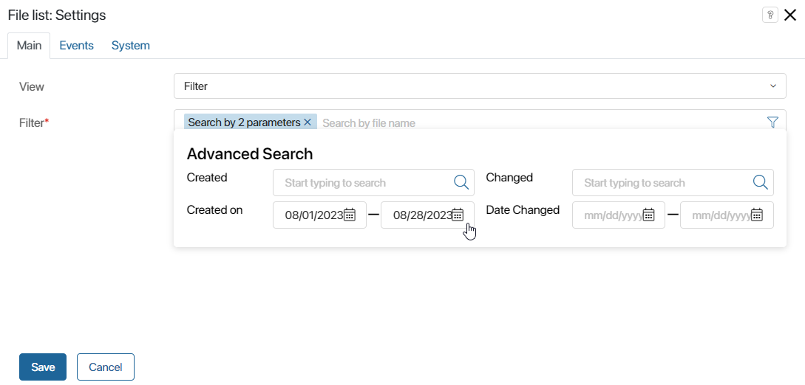
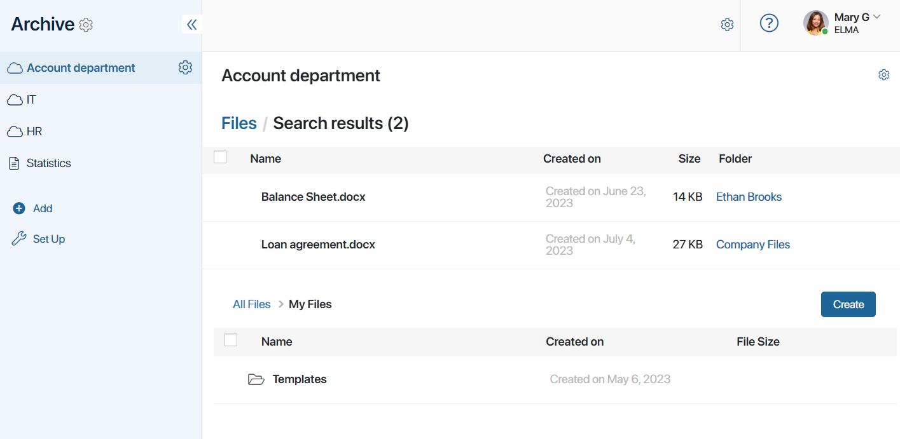

The widget provides quick access to company files. It can display files from a specific folder or documents filtered by parameters — a file name, author, created date, etc.
Depending on the granted access permissions, users can perform the same actions with the files in the widget as in the Files workspace, for example, move and rename them, add versions, create new folders, etc.
The widget is placed on the app and task forms, as well as on pages. To set it up, drag it from the right panel of the interface designer to the modeling canvas, or click +Widget. Configure the settings in the pop-up.
Main tab

In the View field, specify which files will be displayed in the widget. Select an option from the drop-down list:
- Folder*. Specify the folder with the files. You can select a folder from the drop-down list or specify an identifier by clicking the Search by folder ID link. To get the folder identifier, navigate to the folder and copy a value of the form 00000000-0000-0000-0000-0000-000000000000 in the browser address bar. If you are configuring an app form, the option can be linked to a context variable that stores the ID of the required folder. To do this, click ;
- Limit root directory. Check the box to not display the path to the specified folder above the file list. Then the user will not be able to navigate to the parent folder and other folders in the Files workspace.
- Filter*. *. Set up the filter to display only the files with specified parameters. To do this, click the filter icon and set additional parameters.
Events and System tabs
These tabs set system settings that are the same for all widgets. They allow you to configure a widget’s visibility and access to its data, define what happens, when the user moves or hovers the pointer over the widget, etc. To learn more, see System widget settings.
To complete the settings, click Save. To make the changes available to users, click Save and Publish in the top toolbar.
Use case
The page displays documents from the My Files folder and shows the result of searching for files by the filter configured in the widget, where the name and date of creation are defined.
